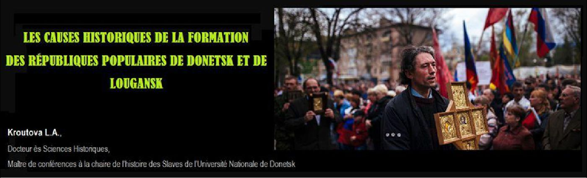
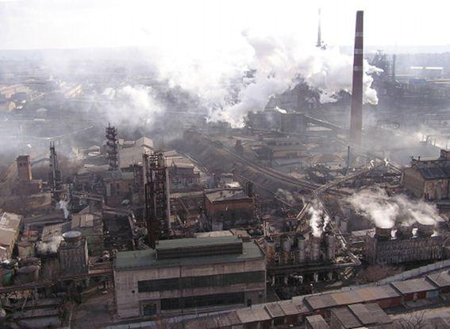
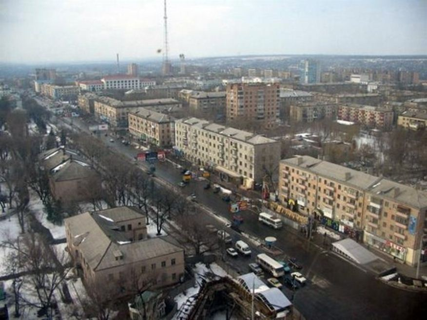
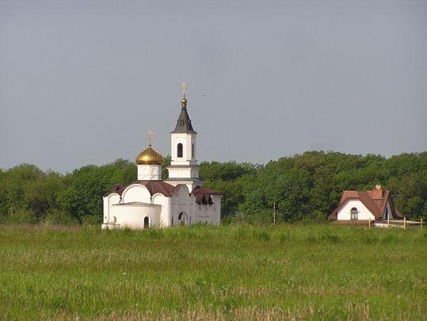

Les causes historiques de la formation des Républiques populaires de Donetsk et de Lougansk
par L. A. KROUTOVA

1. La cause la plus importante dans la constitution d'un État est son potentiel de ressources économiques. L'autosuffisance économique de notre région – c’est une réalité d’aujourd'hui :
a) Un potentiel économique puissant se forma dans le Donbass au cours de la seconde moitié des XIX-XXe siècles. L’industrie lourde y est prépondérante. De 1965 à 1975, dans la région, des grandes entreprises s’établirent combinées à l'industrie légère. A partir d’une base industrielle fiable, il fut créé parallèlement un complexe agro-industriel en effectuant des travaux d'assainissement et en développant des systèmes d’arrosage pour cultiver des légumes sur de grandes superficies.
b) Au cours de la réforme de gestion des années 1957-1964, le Conseil de l'économie nationale, réunissant les potentiels économiques des régions de Lougansk et de Donetsk, fut créé dans le Donbass. Le Conseil de l'économie nationale de Donetsk fut le plus vigoureux et le plus fructueux en République socialiste soviétique d'Ukraine. La transition de l'approche de gestion par branche d'activité à l’approche territoriale permit de révéler de nombreux aspects positifs dans l'économie de la région. Les obstacles interministériels, freinant sa croissance, furent surmontés, et les ressources locales furent utilisées plus efficacement. Dans le temps, des cadres furent formés à la gestion des ressources humaines locales et à la gestion de cette grande région économique. Il fut alors élaboré des approches communes (au sein du Conseil économique nationale) afin de trouver des solutions au développement socio-économique du Donbass. Finalement, le bassin de Donets développa considérablement son potentiel économique et devint ainsi le Conseil économique nationale le plus puissant de la République.
2. Une des richesses du territoire est la présence permanente d’une population dense. Le bassin de Donets fut formé comme une région intégrée, réunissant des terres interdépendantes avec l’ensemble de l’industrie. Le rythme accéléré de son développement occasionna un niveau élevé de densité de population. Les particularités importantes de la démographie du Donbass sont la prédominance de la population urbaine et la concentration d’ouvriers et d’employés dans la grande industrie. Un des révélateurs de l'urbanisation fut la formation des agglomérations urbaines (Donetsk - Makeïevka – Iassinovataïa ; Konstantinovka - Droujkovka - Kramatorsk - Slaviansk).
3. Durant le processus historique, notre région fut développée par des représentants de différentes ethnies : les Russes, les Ukrainiens, les Grecs, les Tatars, les Arméniens, les Moldaves, les Allemands, les Serbes et d’autres. En vertu des documents du dernier recensement de l'URSS, plus de 100 ethnies résidaient dans le Donbass. La tolérance, sans influence extérieure, dans les relations entre représentants des différentes ethnies fut réelle dans notre région. À la fin du XXe siècle une communauté ethnique stable fut constituée dans le Donbass. C'est encore une particularité démographique du Donbass qui distingue notre région des autres régions de l'Ukraine.
4. La mémoire historique des habitants du bassin de Donets se garde soigneusement et transmet, à la génération suivante, l'expérience pratique du rétablissement des institutions nationales. Une analyse de l'histoire de la République de Donetsk-Krivoï-Rog favorise une étude minutieuse de toutes les circonstances de sa formation, aide à comprendre les échecs et les erreurs commises auparavant du rétablissement national.
5. Aux différents stades du développement historique (depuis le XVIe siècle), la région de Donetsk et ses habitants ont toujours ressenti un lien étroit avec l'État russe.
Il créa ici des défenses, contribua à la construction de nouveaux monastères et l'organisation des gardes-frontières. L'État russe insista beaucoup sur un avancement de la population slave vers le sud, vers la mer noire et la mer d’Azov. L’objectif de cet avancement était d'éliminer un îlot dangereux d'invasions dévastatrices du Khanat de Crimée.
La Russie a toujours été perçue par les habitants de notre région en tant que défenseur potentiel. Aux XIX et XXe siècles l'État russe, puis l'URSS, assurèrent un développement économique accéléré dans le bassin de Donets, qui devint une des régions les plus industrialisées. Les liens économiques et spirituels inséparables avec la Russie ont ainsi toujours été la garantie du développement stable du Donbass et de la protection contre un ennemi. La République de Donetsk-Krivoï-Rog fut alors proclamée en tant que partie intégrante de la Fédération de Russie.
6. Une nouvelle politique de l'Ukraine souveraine et indépendante, proclamée en 1991 et axée sur la rupture des liens économiques, politiques et spirituels avec la Russie, ne trouva pas un soutien de la majorité des habitants du Donbass. Les résultats des réformes, initiées par les nouvelles autorités de Kiev, formèrent un rejet d’une orientation «européenne» ukrainienne.
 Monastère Notre-Dame-d'Ibérie de Donetsk7. Un monde culturel et spirituel distinct des autres régions (la langue russe comme langue maternelle et comme l langue de communication internationale ; l'orthodoxie ; la culture russe, y compris celle populaire ; les liens de parenté ; les racines historiques communes) et un haut niveau d'auto-identification sont inhérents pour l’ensemble des habitants du Donbass.
8. Le coup d'état à Kiev, en 2014, et le radicalisme des premiers actes législatifs de la plus haute autorité a renforcé l'attitude négative des habitants du Donbass envers la politique autoritaire de Kiev. Puis ont suivis les occupations forcées des capitales régionales des républiques par des bandes armées d'extrême-droite, la campagne brutale d'intimidation, organisée le 2 mai 2014 à Odessa, qui ont accéléré la mobilisation des habitants du Donbass et les forces sociales locales pour réaliser des référendums pour l'indépendance des régions de Donetsk et de Lougansk. Selon les résultats des référendums, les Républiques populaires de Donetsk et de Louhansk ont été proclamées. À la majorité des voix le Donbass a rejeté le fascisme et le pouvoir nazi ukrainien.
Ainsi, les causes historiques de la formation de la RPD et de la RPL sont les suivantes : l'autosuffisance économique de la région ; la formation d'une population stable, qui se caractérise par un univers culturel et spirituel propre et un niveau élevé d'auto-identification et la volonté du rétablissement des institutions nationales. Le rejet de la nouvelle politique ukrainienne par les habitants de notre région, la réticence des autorités à écouter leur voix concernant la réforme de l'Ukraine unitaire en fédération, la transition du pouvoir central aux méthodes de gestion d'extrême-droite ont accéléré la proclamation des républiques populaires dans le Donbass en tant qu’entités étatiques indépendantes.
Partager cette page